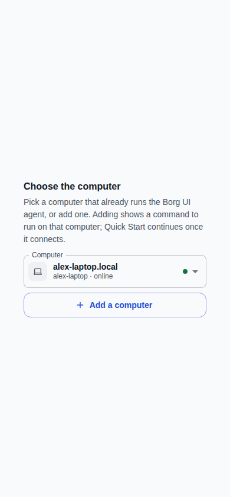
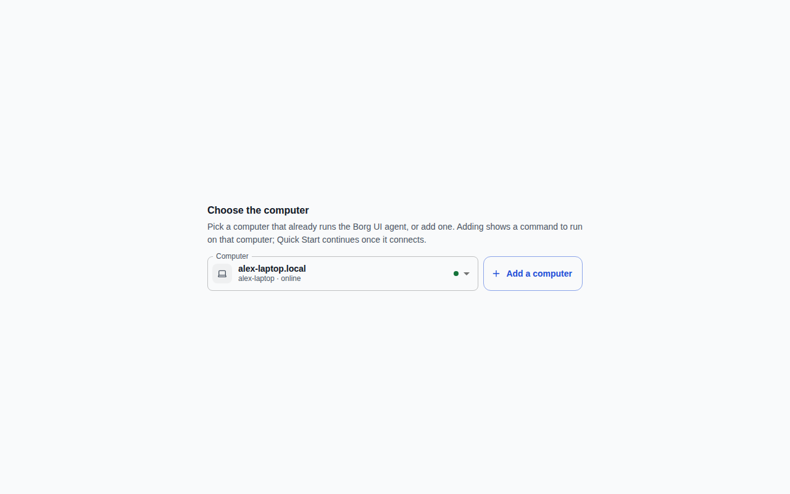
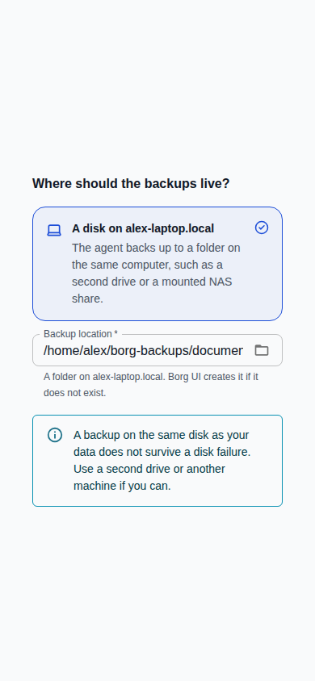
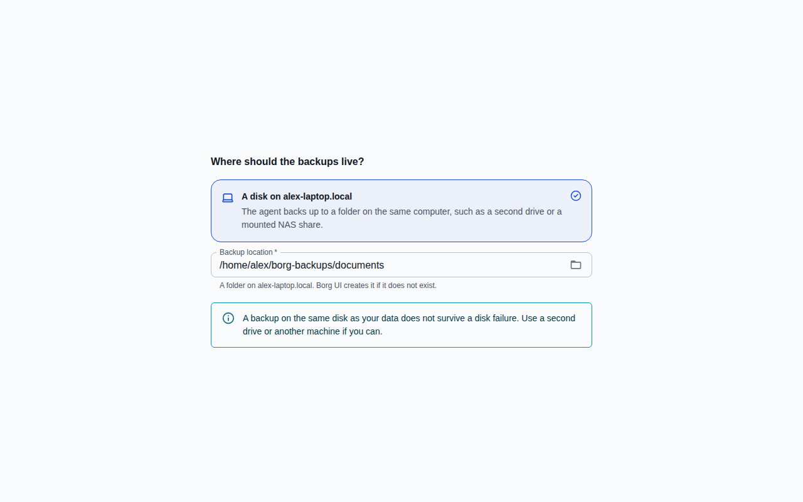
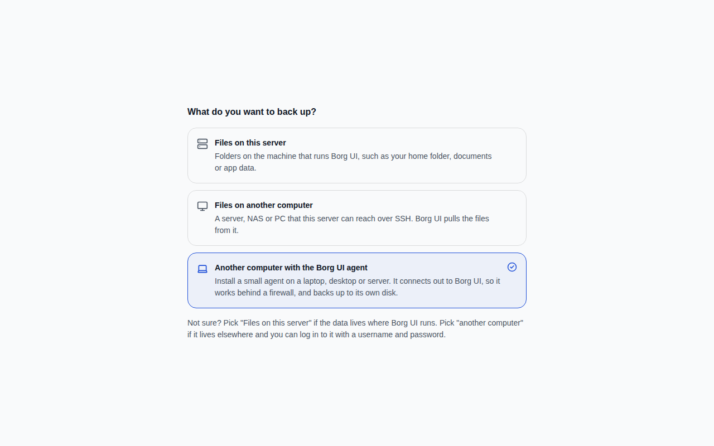

quick-start-dialog--first-step--mobile.png
112,987 px changed · 34.33%
Generated Sep 29, 2026, 6:13 AM UTC
112,987 px changed · 34.33%
15,542 px changed · 1.52%
69,947 px changed · 21.25%
69,313 px changed · 21.06%
94,064 px changed · 9.19%
94,023 px changed · 9.18%





No screenshots were removed.